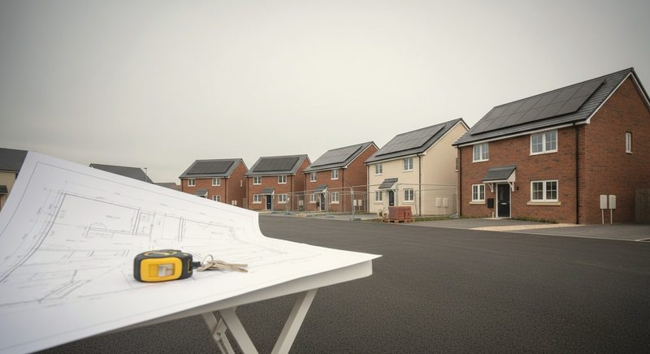
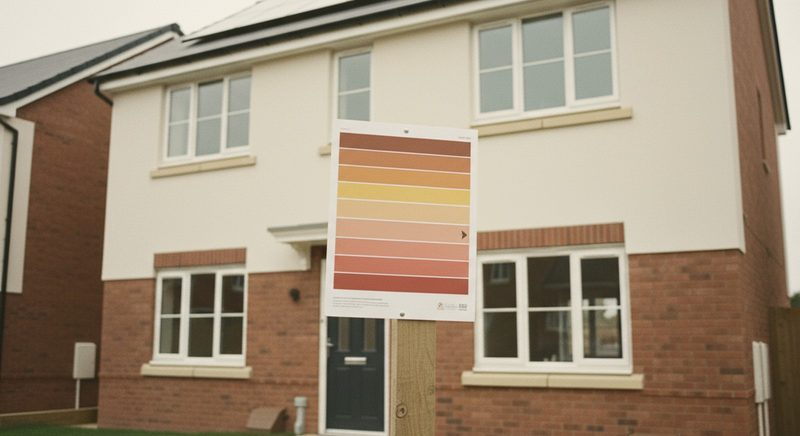
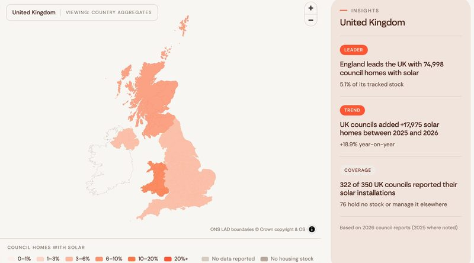

One sizes the solar and battery on a scheme and puts a number against it. One checks a house type specification against the incoming Future Homes Standard. One maps what UK council housing has installed so far.

Roof by roof solar and battery sizing across the house types on a site, with the build cost saving and the generation set against the plot count.
Scheme levelUnder two minutes
Open the tool →
Three questions on house type, specification and contact details return a readiness summary, the gaps against the standard, and a solar and battery specification that closes them.
House type level60 seconds
Open the checker →
Interactive UK map of council-owned housing rooftop solar uptake and EPC ratings, built from figures reported by UK councils on their solar installations.
UK wide2025 and 2026 returns
Open the map →Battery modelling and a grid constraint check are still in design. Each is listed here once it is ready to be used rather than looked at.
Send us the scheme. We will run the ones that apply and come back with the numbers.
Request a site assessment